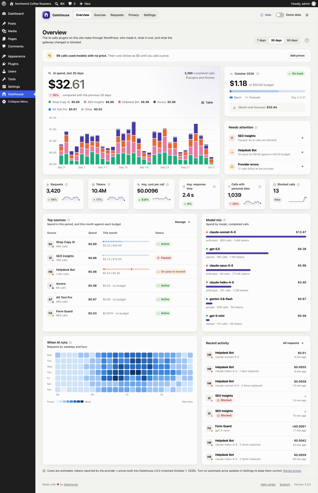
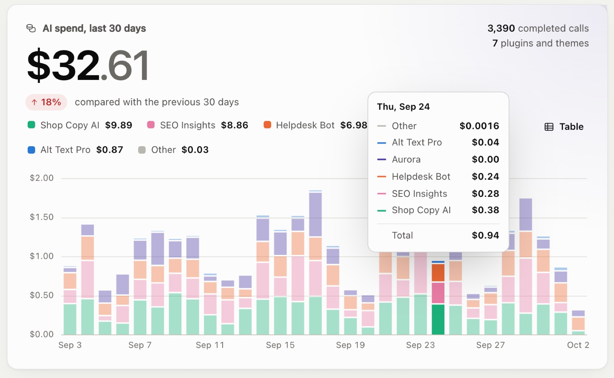
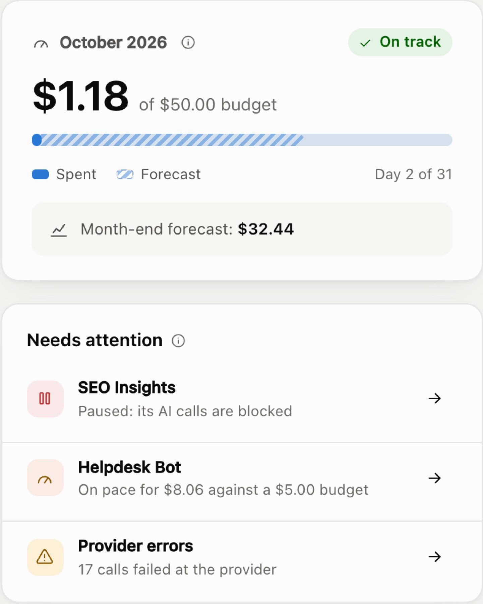

Overview
The Overview is the first page you see under Gatehouse. It answers three questions: how much is AI costing, which plugins are responsible, and does anything need your attention.

Date range#
Use 7 days / 30 days / 90 days at the top right to choose the period. Everything on the page except the monthly budget card follows this choice. Your choice is remembered in your browser and also applies to the Sources page.
AI spend#
The large card at the top left shows:
- Total estimated spend for the period.
- The change against the previous period of the same length. Up is shown in red and down in green, because lower spend is better.
- Completed calls, and how many plugins and themes made them.
- A daily chart of spend by source. Each colored segment is one plugin or theme. The five biggest sources get their own color; the rest are grouped as Other.

Ways to read the chart:
- Hover over a day (or use the arrow keys after clicking the chart) to see every source's spend that day and the total.
- Click a name in the legend to hide or show that source. Double-click to show only that source.
- Click Table to see the same numbers as a table, one row per day.
Each source keeps its color everywhere in Gatehouse, whichever period you pick.
This month's budget#

The card at the top right always shows the current calendar month, whatever date range you picked:
- Spent so far this month, and your site-wide budget if you have set one.
- The budget bar. The solid part is what you've spent. The striped part is the forecast: where spending is likely to end up by the end of the month.
- Status. On track when the forecast is within the budget, Over pace when it isn't.
- The month-end forecast in dollars.
The forecast is month-to-date spend plus the average daily spend of the last 7 days for each remaining day of the month. Using the last week, rather than the first days of the month, keeps it steady on the 1st and 2nd of a month. See How costs are calculated.
No budget yet? The card links to Settings so you can set one.
Needs attention#
This list shows anything you might want to act on:
| Item | What it means |
|---|---|
| Unusual activity or Unusual spending | A source's last hour or last day is far above its normal level. It isn't blocked; consider an hourly limit or budget. |
| Paused | You paused this source; its AI calls are being blocked. |
| Hit its hourly limit | It made as many calls in the last hour as its limit allows; further calls are blocked. Possibly a loop or spam wave. |
| Reached its monthly budget | Its calls are blocked until the 1st of next month, or until you raise the budget. |
| Near its budget | It has used more than your alert threshold (80% by default). |
| On pace to exceed | It is still under budget, but its forecast is over. Act now to avoid a hard stop later in the month. |
| Provider errors | Calls that failed at the AI provider, for example because the provider was overloaded. Opens the Requests log. |
Click the arrow on an item to go to the right page. When nothing needs attention, the card says All clear.
Key numbers#
The row of six tiles shows, for the selected period:
| Tile | Meaning |
|---|---|
| Requests | Every AI call: completed, blocked and failed |
| Tokens | Input plus output tokens across completed calls |
| Avg. cost per call | Estimated spend ÷ completed calls |
| Avg. response time | How long completed calls took, from request to answer |
| Calls with personal data | Calls that contained emails, phone numbers or other personal data, whether or not it was replaced. See Privacy. |
| Blocked calls | Calls stopped by a pause, a budget or an hourly limit |
Each tile compares with the previous period and shows a small trend line of the last 14 days. A tile shows New when there was nothing to compare with.
Top sources#
The plugins and themes with the highest spend in the period. For each one:
- Spend in the period.
- This month: a budget bar if it has a budget (solid = spent, striped = forecast, tick = budget), or its month-to-date spend if it has none.
- Status: Active, On pace to exceed, Near budget, Budget reached, Hit hourly limit or Paused.
Manage opens the Sources page.
Model mix#
Spend by AI model, with the provider, number of calls and tokens. Models without a price say no price set; see Costs and pricing.
When AI runs#
A heatmap of requests by weekday and hour, in your site's timezone. Darker squares mean more calls. Hover or focus a square for the exact count. It helps you spot scheduled jobs, overnight batch work or unexpected traffic.
Recent activity#
The latest AI calls, with source, model, cost, any items replaced and how long ago each happened. All requests opens the full Requests log.
Banners#
Banners at the top of the Overview tell you about problems that affect accuracy or whether AI works at all:
- AI features are turned off on this site. Something has disabled the WordPress AI Client.
- No AI provider is connected or …is installed but not connected. See Troubleshooting.
- Calls used models with no price. Their cost shows as $0 until you add a price.
Note that calls whose answers were streamed and read by the plugin itself have no known cost. They're counted in calls and hourly limits, but not in spend.
- Built-in model prices are N days old. Shown when the prices built into the plugin are more than four months old. Update the plugin or review the prices.
The note at the bottom of the page shows which Gatehouse version supplied the prices, and the date they were checked.
Still stuck? Check Troubleshooting and the FAQ, or ask on the support forum. Inside WordPress, click Help at the top right of Gatehouse.